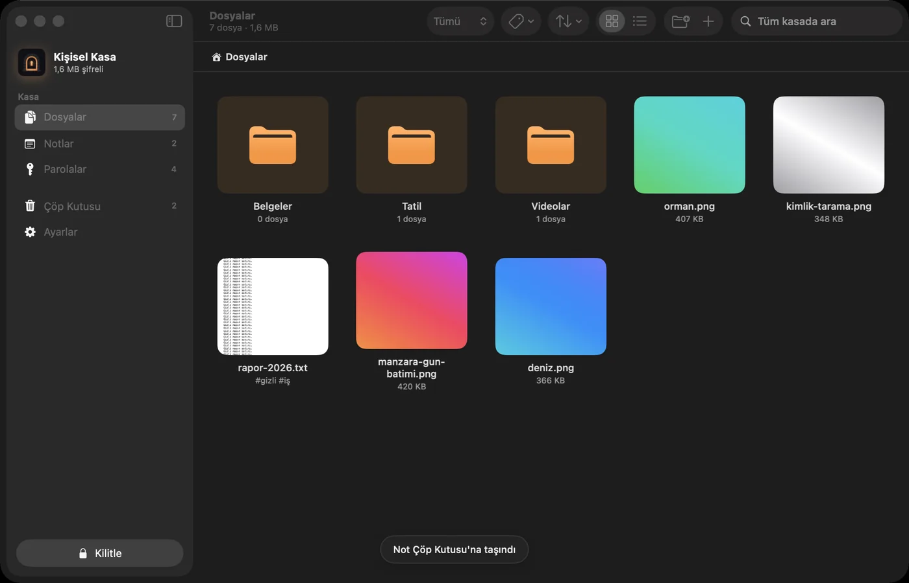
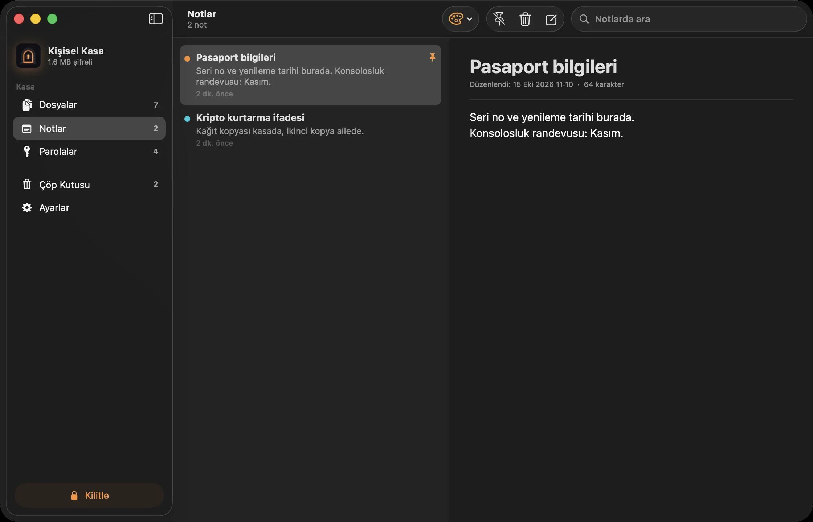
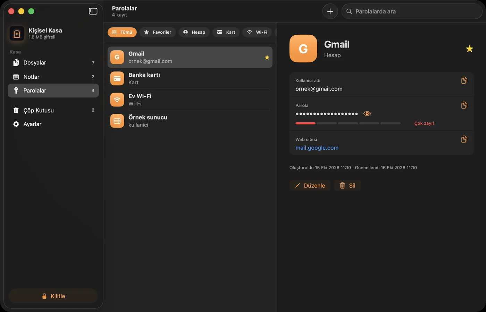
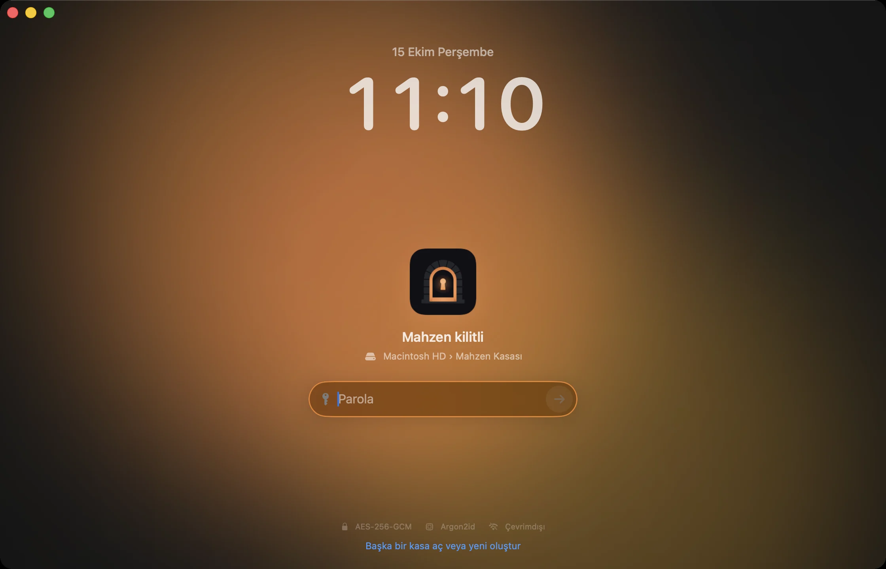
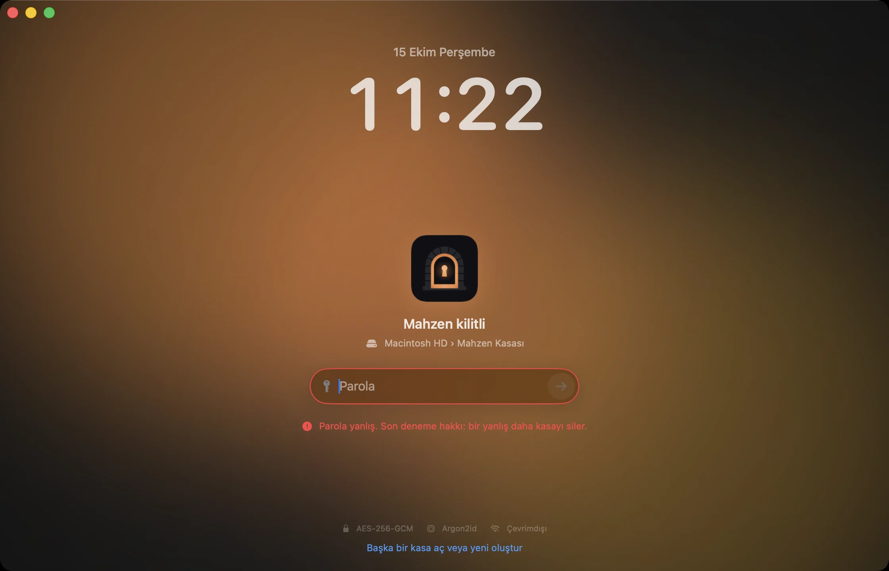
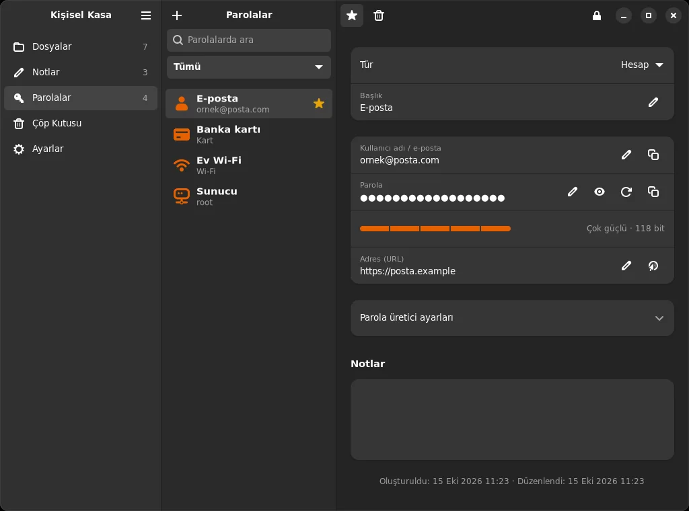

Dosyalar
Sürükle, bırak. Klasör yapısı korunur, eklerken şifrelenir. Görseller ve metinler uygulama içinde açılır; mükerrer dosya ikinci kez eklenmez.
Dosyaların, notların ve parolaların için şifreli, taşınabilir bir kasa. Hesap yok. Bulut yok. Yalnızca sen.

Güvenlik
Dosya içerikleri, dosya adları, klasörler, notlar ve parolalar bu bilgisayardan çıkmadan şifrelenir. Diskte geriye yalnızca rastgele adlı, rastgele görünen baytlar kalır.
İçeride
Sürükle, bırak. Klasör yapısı korunur, eklerken şifrelenir. Görseller ve metinler uygulama içinde açılır; mükerrer dosya ikinci kez eklenmez.
Kurtarma ifadeleri, pasaport numaraları, yarım kalmış planlar. Renklendir, sabitle, ara.
Hesap, kart, Wi-Fi, sunucu. Güçlü parola üretir, gücünü ölçer; kopyaladığın parolayı 30 saniye sonra panodan siler.
Hareketsiz kaldığında, uykuda, ekran kilitlendiğinde ve SSD çıkarıldığı an kilitlenir. Anahtarlar bellekten silinir.



Yanlış parola sınırı
Açarsan, art arda belirlediğin sayıda yanlış parola girildiğinde Mahzen kendi anahtarlarını yok eder. Kasadaki her şey, doğru parolayla bile, bir daha açılamaz.

macOS ve Linux
Kasayı SSD'ye koy; Mac'te de Linux'ta da aç. Bir yerde eklediğin dosya, öbüründe hemen orada.

macOS · SwiftUI / Linux · GTK 4 + libadwaita
macOS 14+ · Xcode 15.3+
git clone https://github.com/efefdev/Mahzen.git
cd Mahzen
./scripts/build-app.shLinux GTK 4 · libadwaita 1.5+
git clone https://github.com/efefdev/Mahzen.git
cd Mahzen/linux
./install.shMahzen henüz bağımsız bir güvenlik denetiminden geçmedi. Yapı taşları denetlenmiş kütüphanelerdir; onları birleştiren kod değildir. Bir açık bulursan bildir. Parolanı unutursan verilerin kurtarılamaz; arka kapı yoktur.